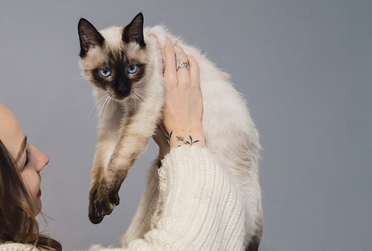

Los tonkineses son descendientes de los siameses y los burmeses, pues fue a través de cruces de felinos de estas dos especies cómo se originaron los primeros ejemplares de gato tonkinés. Al principio se los conocía como siameses dorados, lo cual hace difícil datar el momento exacto de la aparición de la raza. Muchos dicen que ya en 1930 existían los gatos tonkineses, mientras que otros apoyan que no fue hasta 1960 cuando nació la primera camada que sería reconocida como tal.
se caracterizan por tener un cuerpo equilibrado, ni demasiado grande ni demasiado pequeño, con un peso promedio de entre 2,5 y 5 kilogramos, siendo gatos de tamaño mediano. Siguiendo con las características físicas del gato tonquinés, podemos decir que su cola es bastante larga y fina. Su cabeza es de silueta redondeada y forma de cuña modificada, más larga que ancha y de hocico romo. En su cara destacan sus ojos de penetrante mirada y forma almendrada, de gran tamaño y siempre de color azul cielo o verde azulado. Sus orejas son medianas, redondeadas y de base ancha.

Se aceptarían los siguientes colores y patrones: natural, champagne, azul, platino y honey (aunque este último no es aceptado por la CFA)

Son unos gatos de carácter dulce, muy cariñosos y que adoran pasar tiempo con su familia y con otros animales, lo cual es un gran punto a favor si queremos que nuestro tonkinés conviva con niños o con otros animales. Por esta razón, no toleran bien pasar mucho tiempo solos, pues necesitan de la compañía de los suyos para ser felices. Tendremos que considerar que esta raza es extremadamente activa e inquieta, por lo que han de tener un espacio suficiente para sus juegos y poder ejercitarse, de lo contrario se mostrarán excesivamente nerviosos y pueden presentar tendencias destructivas o disruptivas como los excesos de maullidos. Dado que son tan juguetones podemos prepararles un parque de juegos con rascadores de diversas alturas, juguetes comprados o hechos por nosotros mismos.

Su pelaje solo requerirá un cepillado semanal para mantenerse limpio y en un estado envidiable. Eso sí, hemos de cuidar que su dieta sea balanceada y saludable, no dándoles demasiados snacks y proporcionándoles un pienso de calidad que les permita tener un estado de salud y un peso óptimos. También podemos optar por elaborar una dieta casera, como la dieta BARF, siguiendo los consejos de un veterinario especializado en nutrición.

Son bastante saludables, aunque parecen sufrir con más facilidad una anomalía visual denominada estrabismo, que provoca que los ojos muestren una descoordinación, teniendo una mirada que para muchos no resulta demasiado estética. Esto lo comparten con los siameses, pues lo han heredado de ellos, pero no implica más problemas que la mera estética, e incluso hay casos en los que se corrige solo.